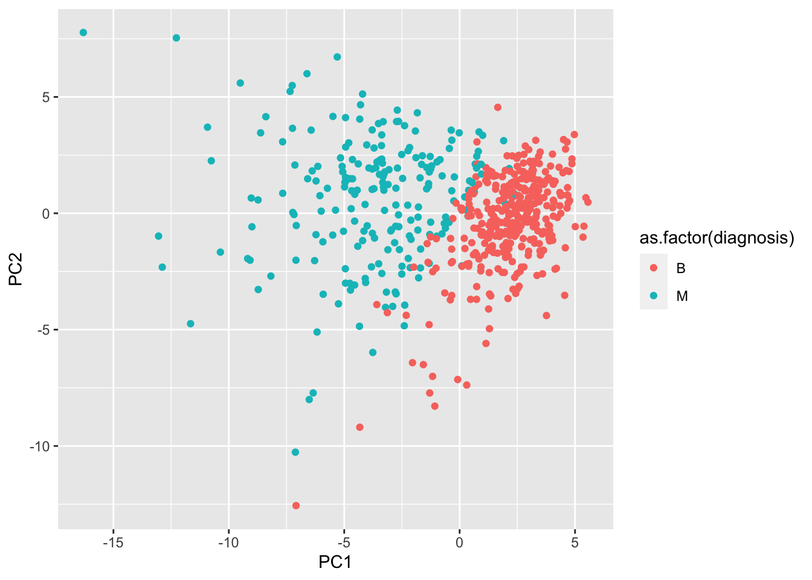

#Downloaded data into working directory from class websitefna.data <-"WisconsinCancer.csv"wisc.df <-read.csv(fna.data, row.names =1)head(wisc.df, n =3)
[1] M M M M M M M M M M M M M M M M M M M B B B M M M M M M M M M M M M M M M
[38] B M M M M M M M M B M B B B B B M M B M M B B B B M B M M B B B B M B M M
[75] B M B M M B B B M M B M M M B B B M B B M M B B B M M B B B B M B B M B B
[112] B B B B B B M M M B M M B B B M M B M B M M B M M B B M B B M B B B B M B
[149] B B B B B B B B M B B B B M M B M B B M M B B M M B B B B M B B M M M B M
[186] B M B B B M B B M M B M M M M B M M M B M B M B B M B M M M M B B M M B B
[223] B M B B B B B M M B B M B B M M B M B B B B M B B B B B M B M M M M M M M
[260] M M M M M M M B B B B B B M B M B B M B B M B M M B B B B B B B B B B B B
[297] B M B B M B M B B B B B B B B B B B B B B M B B B M B M B B B B M M M B B
[334] B B M B M B M B B B M B B B B B B B M M M B B B B B B B B B B B M M B M M
[371] M B M M B B B B B M B B B B B M B B B M B B M M B B B B B B M B B B B B B
[408] B M B B B B B M B B M B B B B B B B B B B B B M B M M B M B B B B B M B B
[445] M B M B B M B M B B B B B B B B M M B B B B B B M B B B B B B B B B B M B
[482] B B B B B B M B M B B M B B B B B M M B M B M B B B B B M B B M B M B M M
[519] B B B M B B B B B B B B B B B M B M M B B B B B B B B B B B B B B B B B B
[556] B B B B B B B M M M M M M B
Levels: B M
Q1: How many observations are in this data set?
nrow(wisc.data)
[1] 569
There are 569 observations in the data set.
Q2: How many of the observations have a malignant diagnosis?
table(diagnosis)
diagnosis
B M
357 212
There are 212 malignant diagnoses
Q3 How many variables/features in the data are suffixed with _mean?
length(grep(pattern ="mean", x =as.character(variable.names(wisc.df))))
[1] 10
10 of the variables in the data are suffixed with _mean
Q4: From your results, what proportion of the original variance is captured by the first principal components (PC1)?
A: 44.27%
Q5. How many principal components (PCs) are required to describe at least 70% of the original variance in the data?
PC1-PC3
Q6. How many principal components (PCs) are required to describe at least 90% of the original variance in the data?
7 PCs!
Interpreting the results of the PCA:
biplot(wisc.pr)
Q7: What stands out to you about this plot? Is it easy or difficult to understand? Why?
This plot stands out as being very difficult to interpret! I would prefer to use a different type of plot to interpret our PCA results.
#Scatterplot insteadas.factor(diagnosis)
[1] M M M M M M M M M M M M M M M M M M M B B B M M M M M M M M M M M M M M M
[38] B M M M M M M M M B M B B B B B M M B M M B B B B M B M M B B B B M B M M
[75] B M B M M B B B M M B M M M B B B M B B M M B B B M M B B B B M B B M B B
[112] B B B B B B M M M B M M B B B M M B M B M M B M M B B M B B M B B B B M B
[149] B B B B B B B B M B B B B M M B M B B M M B B M M B B B B M B B M M M B M
[186] B M B B B M B B M M B M M M M B M M M B M B M B B M B M M M M B B M M B B
[223] B M B B B B B M M B B M B B M M B M B B B B M B B B B B M B M M M M M M M
[260] M M M M M M M B B B B B B M B M B B M B B M B M M B B B B B B B B B B B B
[297] B M B B M B M B B B B B B B B B B B B B B M B B B M B M B B B B M M M B B
[334] B B M B M B M B B B M B B B B B B B M M M B B B B B B B B B B B M M B M M
[371] M B M M B B B B B M B B B B B M B B B M B B M M B B B B B B M B B B B B B
[408] B M B B B B B M B B M B B B B B B B B B B B B M B M M B M B B B B B M B B
[445] M B M B B M B M B B B B B B B B M M B B B B B B M B B B B B B B B B B M B
[482] B B B B B B M B M B B M B B B B B M M B M B M B B B B B M B B M B M B M M
[519] B B B M B B B B B B B B B B B M B M M B B B B B B B B B B B B B B B B B B
[556] B B B B B B B M M M M M M B
Levels: B M
plot(wisc.pr$x[,1:2], col =as.factor(diagnosis))
Q8. Generate a similar plot for principal components 1 and 3. What do you notice about these plots?
There is less separation than between PC1 and PC2.
# PC 1 and 3plot(x = wisc.pr$x[,1], y = wisc.pr$x[,3], col =as.factor(diagnosis), xlab ="PC1", ylab ="PC3")
Next step is to go to ggplot to make it look better
#Creating a data.framedf <-as.data.frame(wisc.pr$x)df$diagnosis <- diagnosislibrary(ggplot2)
#Making a plot ggplot(df) +aes(PC1, PC2, col =as.factor(diagnosis)) +geom_point()

Now, we will look at the scree plots to see the proportion of variance
#Calculating the variancepr.var <- wisc.pr$sdev^2head(pr.var)
#Variance explained by each principal component (30 total): pvepve <- pr.var/30plot(pve, xlab ="Principal Component", ylab ="Proportion of Variance Explained", ylim =c(0,1), type ="o")
# Alternative scree plot of the same data, note data driven y-axisbarplot(pve, ylab ="Precent of Variance Explained",names.arg=paste0("PC",1:length(pve)), las=2, axes =FALSE)axis(2, at=pve, labels=round(pve,2)*100 )
Q9. For the first principal component, what is the component of the loading vector (i.e. wisc.pr$rotation[,1]) for the feature concave.points_mean? This tells us how much this original feature contributes to the first PC.
#Now plotting with reordered factorplot(wisc.pr$x[,1:2], col =g)
skipping following step for pdf: 3D
#Clustering along the first 7 PCswisc.pr.hclust <-hclust(dist(wisc.pr$x[, 1:7]), method="ward.D2")wisc.pr.hclust.clusters <-cutree(wisc.pr.hclust, k =2)table(wisc.pr.hclust.clusters)
wisc.pr.hclust.clusters
1 2
216 353
Q13. How well does the newly created model with four clusters separate out the two diagnoses?
Comparing to actual diagnoses:
table(wisc.pr.hclust.clusters, diagnosis)
diagnosis
wisc.pr.hclust.clusters B M
1 28 188
2 329 24
Q14. How well do the hierarchical clustering models you created in previous sections (i.e. before PCA) do in terms of separating the diagnoses? Again, use the table() function to compare the output of each model (wisc.km$cluster and wisc.hclust.clusters) with the vector containing the actual diagnoses.
table(wisc.hclust.clusters, diagnosis)
diagnosis
wisc.hclust.clusters B M
1 12 165
2 2 5
3 343 40
4 0 2